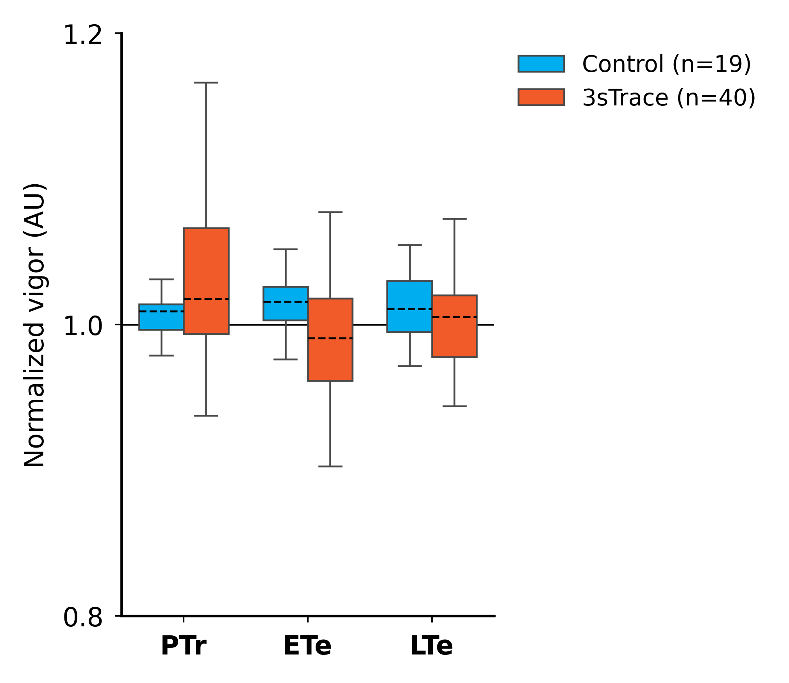
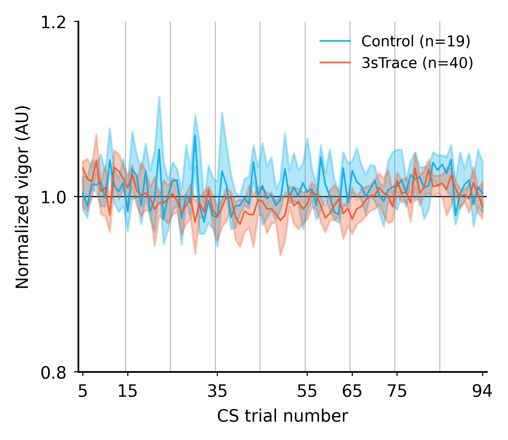
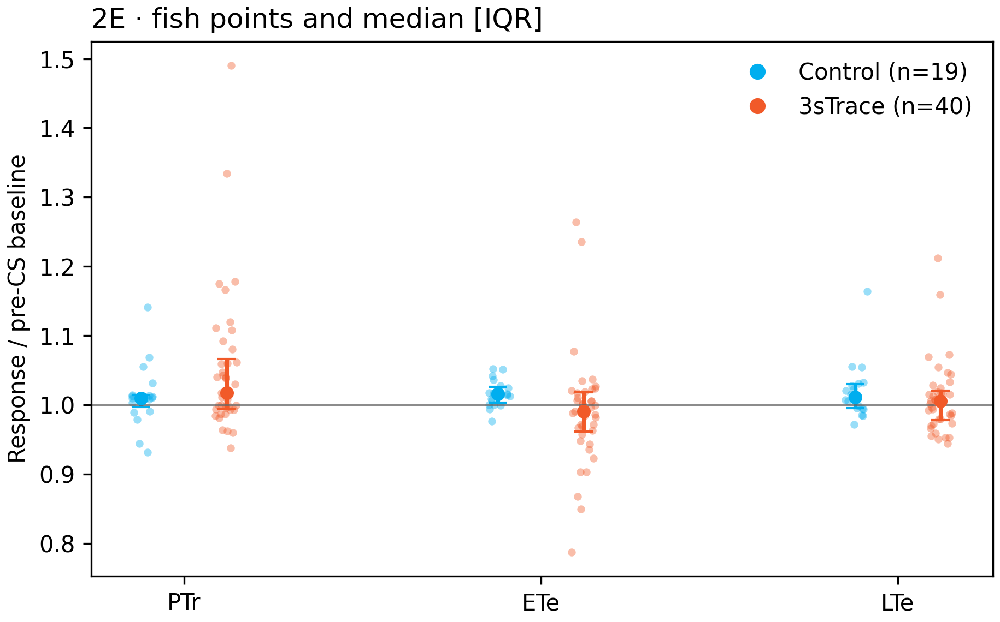
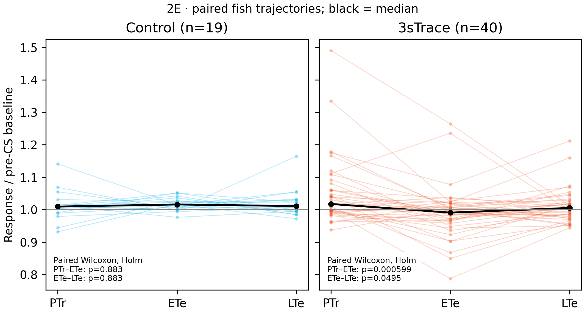
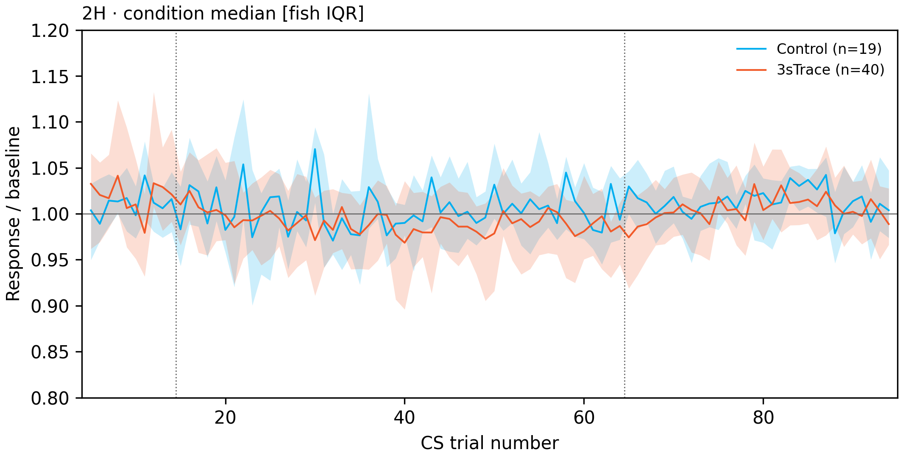
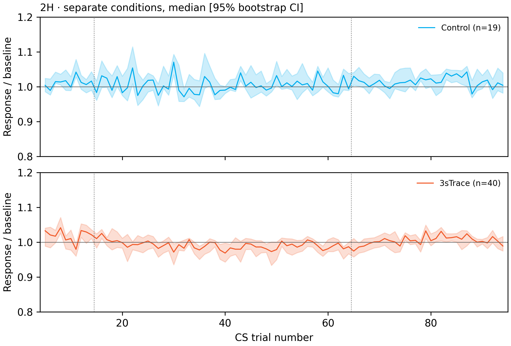
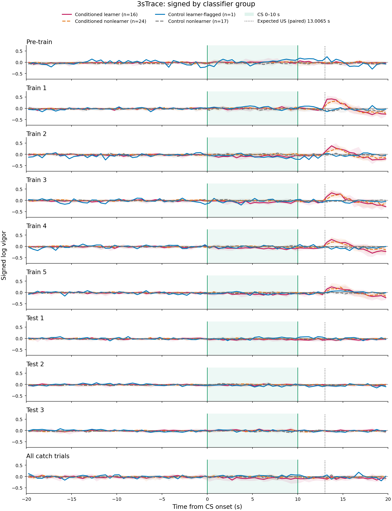
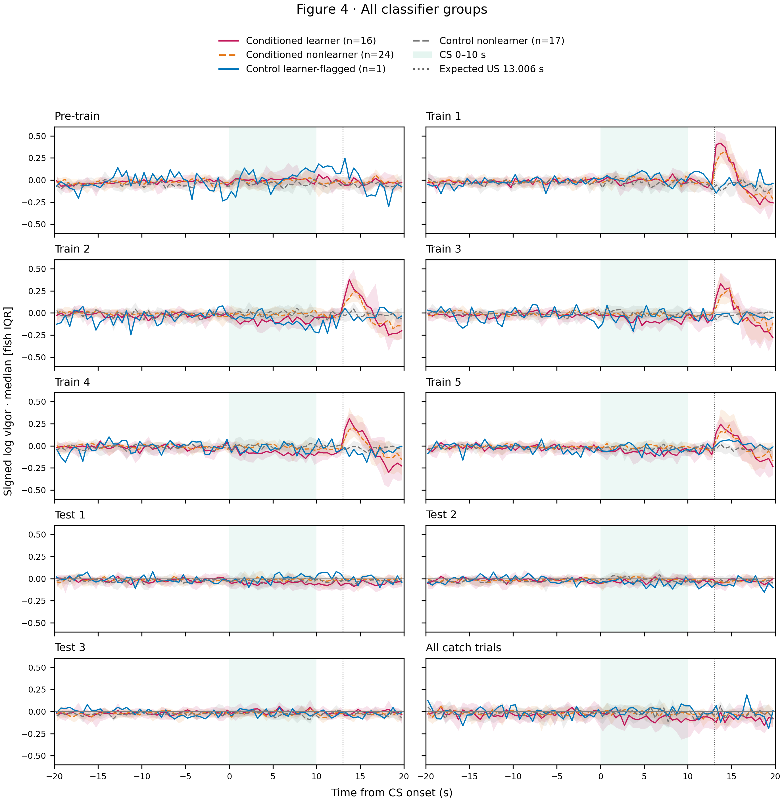
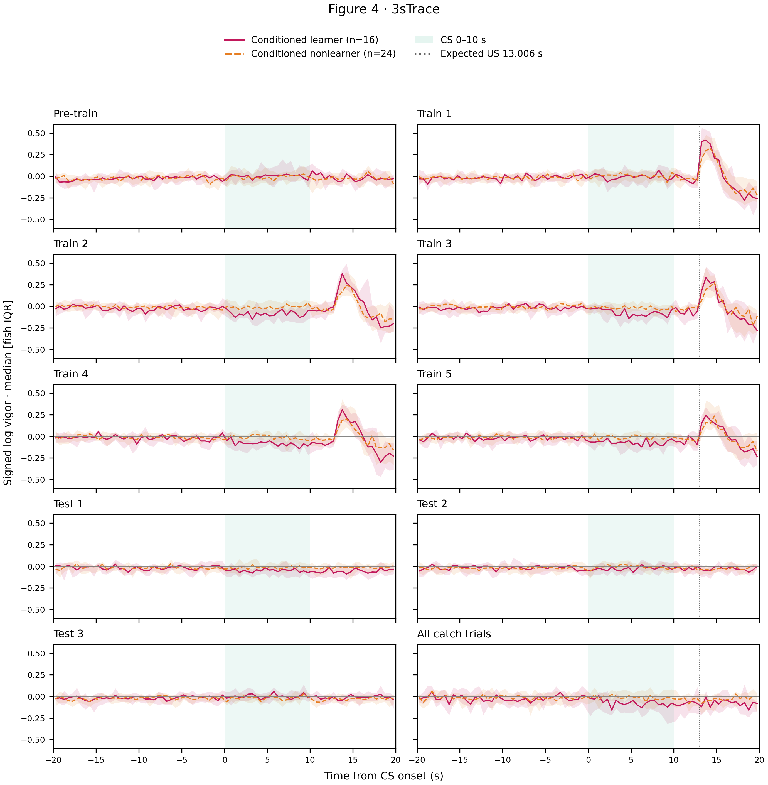
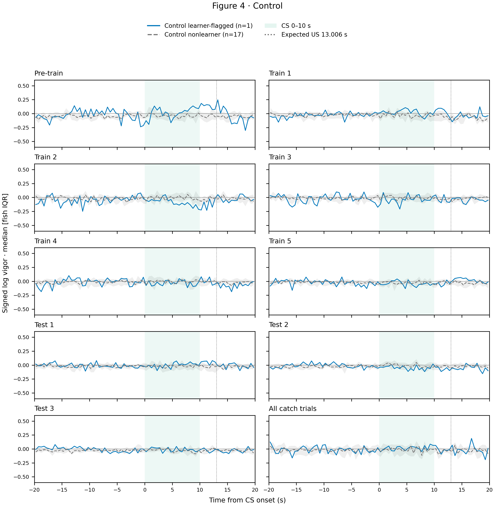

2E v1 · legacy grouped boxes
Per-fish median in PTr 5–9, ETe 65–69, LTe 90–94; median and box IQR.

2H v1 · legacy bootstrap
Condition median, 95% bootstrap CI, 100 resamples, seed 10.

2E v2 · descriptive median/IQR
Adapted fig2-dg-descriptive: fish points and median/IQR.

2E v3 · paired fish and legacy tests
Adapted fig2-dg-legacy-stars-and-lme block layout; paired Wilcoxon and Mann–Whitney tables recomputed, Holm within test families. Finite pairs used, counts exported.

2H v2 · median/IQR
Adapted fig2-dg-descriptive: condition median and fish IQR, no smoothing.

2H v3 · separate conditions
Same legacy bootstrap estimator and interval, conditions in separate axes; no new LME fitted.

4 v1 · existing stacked profiles
Saved ten-row median/IQR profiles, same classifier labels.

4 v2 · compact grid
Same saved group median/IQR in a 5×2 grid, common y scale across all groups.

4 v3 · 3sTrace separately
Same saved group median/IQR, split conditions; common y scale retained.

4 v3 · Control separately
Same saved group median/IQR, split conditions; common y scale retained.
